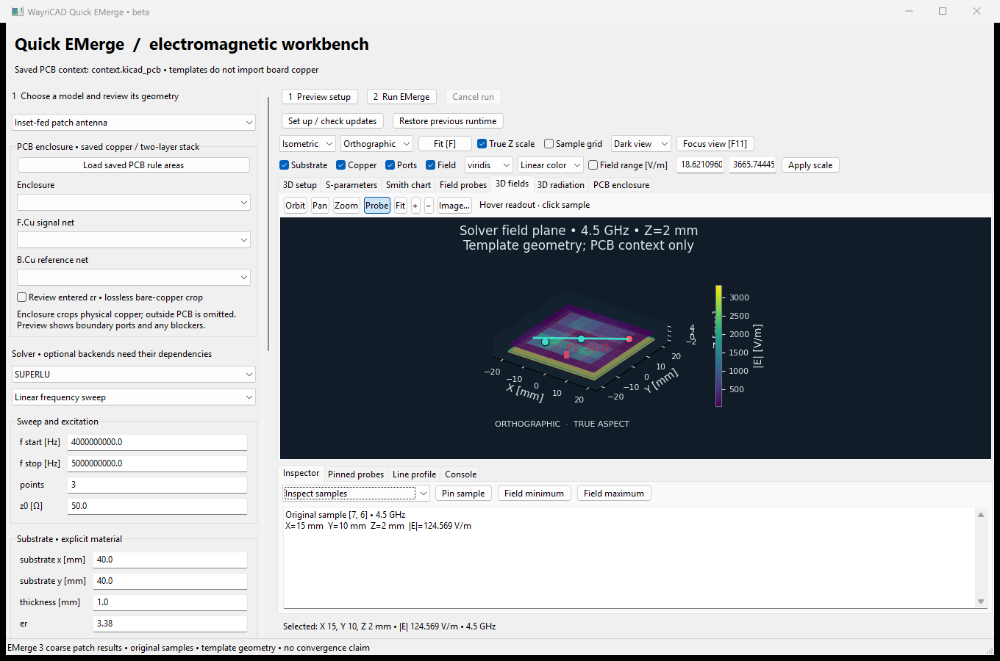
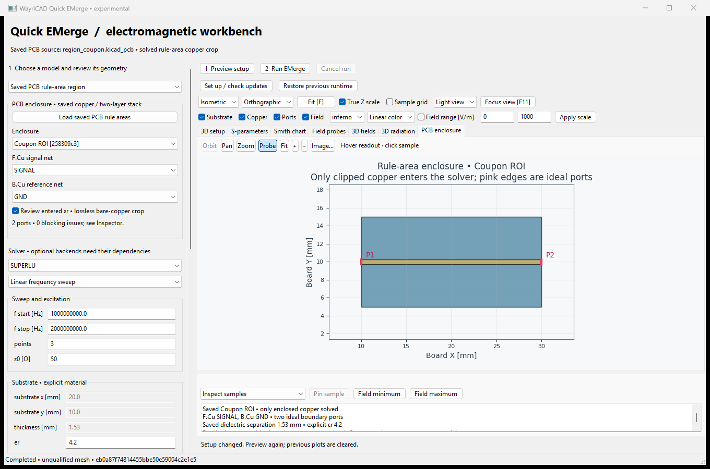

Testing beta native EM studies: antenna/PCB-coupon templates and saved-PCB rule-area copper crops. Templates use PCB context; region mode imports clipped two-layer copper and saved dielectric separation.
Install the independently packaged beta ZIP using KiCad Plugin and Content Manager’s Install from File, then restart PCB Editor. The stable PCM feed remains unchanged.
Save the PCB, fill zones, define a two-layer stackup and draw a polygonal board rule area around the subsection. Choose Saved PCB rule-area region, Load saved PCB rule areas, then select the enclosure, F.Cu signal and B.Cu reference. Review the entered real permittivity and bare-copper approximation. Preview setup displays actual clipped polygons and numbered boundary ports; the inspector lists any blockers. Run only after reviewing the cut interfaces.

Concave contours and holes are preserved; geometry outside the enclosure is omitted. Natural board edges and existing board holes do not become artificial ports. The whole two-layer column is cropped, regardless of keepout layer permissions. The source PCB and project metadata remain unchanged.
This initial path supports 1–8 ideal vertical boundary ports and zero-thickness PEC copper. Drilled features inside the crop, unfilled zones, unselected cut conductors, incomplete return spans, corner-ambiguous ports and curved rule-area contours block simulation. Interior feeds, multilayer and populated-component models need further integration. Fields retain original board coordinates.
Setup changes clear old plots. Cancel stops the worker and retains diagnostic files. Plot toolbars export images. Save/load JSON preserves editable setup.
Compact buttons inside each viewport select Orbit, Pan, Zoom or Probe. Left drag performs the selected navigation action; Probe uses left click to select a sample. Middle drag pans, Probe's right drag orbits in 3D, and the wheel zooms. In 2D, Zoom selects a rectangle. Fit, +, − and Image buttons are alongside the mode buttons. O/P/Z/I are interaction shortcuts. Navigation gestures do not place probes.
Choose a camera preset, orthographic/perspective projection, physical Z aspect or labeled Z exaggeration. Drag to orbit, scroll to zoom, F to fit, 1–4 for camera presets, and F11 to expand/restore the viewport. Camera and selection survive color and visibility changes.
Toggle substrate, copper, ports, field and sample grid. Use linear/log colors and an optional field range in V/m. Log scales mask zero; unknown samples stay missing. The sample grid is not the FEM mesh.
Hover for readouts, select Probe and click to select, then Pin sample to record it. Field selection is linked between the 2D/3D views. The inspector provides min/max navigation and CSV export of pinned samples. Line cut selects two field samples and plots nearest-original-sample values against distance in mm, with CSV export. These profiles do not interpolate new field measurements.
Large 3D field displays use at most 64 × 64 cells with cell-average colors; probes use the full original grid. Missing cells remain missing. 3D picking selects a projected sample within 14 pixels, not a point in an arbitrary volume.
Dependency updates are checked daily. Set up / check updates forces a check or retries installation. Each candidate is installed separately and tested with real coarse solves before activation. Failed updates retain the working runtime; Restore previous runtime rolls back to a retained compatible environment. Cancel setup stops installation. KiCad's Python packages are never upgraded.
Solver selection, adaptive mesh passes and adaptive AAA sweeps are available. Read stopping-limit warnings in the log; completed computation is not convergence.
Models use zero-thickness PEC, homogeneous lossless dielectric and a first-order absorbing air boundary. Mesh convergence, gain/efficiency, general populated/multilayer board extraction and live KiCad toolbar operation remain unqualified. Blank field cells and singular metrics are unknown. Normalized radiation radius is not gain.
See the user guide for scope, dependencies, run artifacts, validation evidence and remaining milestones.